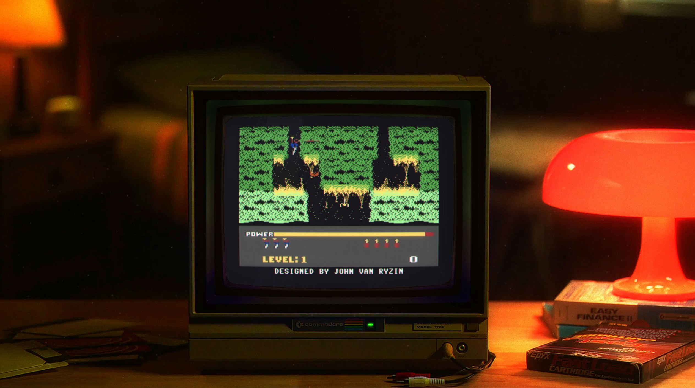

Remote C64 keyboard
Ctrl+K sends your typing to the C64. On current C64 Ultimate firmware the keys go straight into the keyboard matrix, so every program sees them; on older firmware they go into the KERNAL keyboard buffer.
UltiView shows the video and audio streams of your C64 Ultimate on a simulated CRT, and types on the C64 from your PC keyboard: in BASIC, in games, even in the Ultimate's own menu. A fork of ultraView, with the same CRT and a few things added.
Free and open source (GPL-3). Needs a C64 Ultimate on your network. What's new
What UltiView adds
Ctrl+K sends your typing to the C64. On current C64 Ultimate firmware the keys go straight into the keyboard matrix, so every program sees them; on older firmware they go into the KERNAL keyboard buffer.
Alt is the Commodore key, Page Up is RESTORE, as in VICE. Alt+Page Up opens the Ultimate menu, and the cursor keys, Return and Esc work inside it.
Ctrl+O lists the C64 Ultimate's SD card, USB stick and flash. Enter runs PRG, CRT, SID and MOD files and boots D64, G64, D71 and D81 disk images.
Ctrl+S stops the streams and frees the ports, so another program can use them; the last frame stays on screen until you resume.
When another computer still has the stream, UltiView clears it and takes over, or says why it can't, with Retry and Close. No hangs.
The audio follows the C64 Ultimate's own clock, so it no longer clicks every few seconds.
Everything from ultraView stays: the CRT simulation for PAL and NTSC, video and audio in full quality, the games browser, CRT and PRG uploads. UltiView updates itself from its own releases.
Screenshot

Credits
UltiView is a modified version of ultraView by Michael Hartmann (Toddler Boy): its CRT simulation, stream handling and everything else it does come from there. UltiView adds the keyboard, the file browser and the stream fixes, and is released under the same GNU General Public License v3. It is not the official ultraView; please report UltiView's problems here, not upstream.
Source: github.com/RunStopRestored/UltiView. The screenshot is from ultraView.